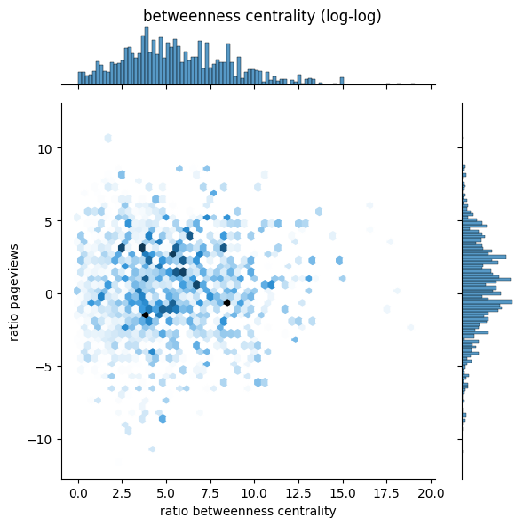

Centrality in actor graph and popularity. Are they linked?
We want to use wikipedia pageviews as a proxy for popularity, and try to find a correlation the centrality of actors in the actor graph. For this we used the dataset of pageviews from Homework 2. Since Wikipedia was founded at the start of the century, pageviews might not be relevant for older actors. To eliminate this possible bias we considered only actors having played in recent movies and formed the actor-graph only based on the recent movies.
We therefore consider 49481 actors accross 41039 movies, 4631 of which (the actors) we have the pageview count.
Computing centrality
We focused on three metrics of centrality: - Degree centrality: With how many other actors have the actors played - Eigenvector centrality - Betweenness: how much an actor bridges communities of actors
Who are the most central actors
For those interested, we list here the most central actors.
| degree_centrality | actor_name | |
|---|---|---|
| 70 | 0.011601 | Anupam Kher |
| 744 | 0.010853 | Jane Lynch |
| 748 | 0.010287 | Samuel L. Jackson |
| 710 | 0.009903 | David Koechner |
| 202 | 0.009863 | Justin Long |
| eigenvector_centrality | actor_name | |
|---|---|---|
| 1150 | 0.095907 | David Strathairn |
| 6434 | 0.095699 | Nicole Kidman |
| 4889 | 0.095603 | Clive Owen |
| 6102 | 0.094613 | Parker Posey |
| 4467 | 0.094151 | Rodrigo Santoro |
| betweenness_centrality | actor_name | |
|---|---|---|
| 70 | 0.022059 | Anupam Kher |
| 313 | 0.013711 | Michael Madsen |
| 5728 | 0.013613 | Lee Byung-Hun |
| 5257 | 0.011191 | Vera Farmiga |
| 10 | 0.009740 | Nassar |
Comparing centrality to pageviews
Naïve visualisation
We first try to visualise the two values together.
The correlations we found were very modest with R^2 values of 0.016, 0.013, and 0.007 respectively
The impact of movie count
For movie count.
We find an average increase of 50.742% in pageviews per 10x increase in movie count
===============================================================================
coef std err t P>|t| [0.025 0.975]
-------------------------------------------------------------------------------
Intercept 4.7326 0.015 324.735 0.000 4.704 4.761
movie_count 0.1782 0.018 9.787 0.000 0.143 0.214
===============================================================================For degree centrality.
We find an average increase of 3.7x in centrality per 10x increase in movie count
===============================================================================
coef std err t P>|t| [0.025 0.975]
-------------------------------------------------------------------------------
Intercept -3.6732 0.007 -529.463 0.000 -3.687 -3.660
movie_count 0.5656 0.009 65.250 0.000 0.549 0.583
===============================================================================
For eigenvector centrality.
We find an average increase of 19.8x in centrality per 10x increase in movie count
===============================================================================
coef std err t P>|t| [0.025 0.975]
-------------------------------------------------------------------------------
Intercept -4.8026 0.026 -187.939 0.000 -4.853 -4.753
movie_count 1.2970 0.032 40.620 0.000 1.234 1.360
===============================================================================
For betweenness centrality.
We find an average increase of 10.7x in centrality per 10x increase in movie count
===============================================================================
coef std err t P>|t| [0.025 0.975]
-------------------------------------------------------------------------------
Intercept -5.3659 0.042 -126.906 0.000 -5.449 -5.283
movie_count 1.0284 0.040 25.452 0.000 0.949 1.108
===============================================================================
Here the values are better correlated, with R^2 values of 0.479, 0.263, and 0.212 respectively. Movie count having a significant correlation with pageviews as well as with centrality, it acts as a confounder. We therefore aim to isolate the effects of centrality from those of movie count by using A/B testing
The A/B tests
The A/B test is done by making pairs of actors with similar numbers of movies (Here similar means that their number of movies are less than 5% different) such that the first actor has a lower centrality than the second.
For degree centrality.
We find an average increase of -2.43% in pageviews per 2x increase in centrality
=======================================================================================
coef std err t P>|t| [0.025 0.975]
---------------------------------------------------------------------------------------
Intercept 0.0007 0.020 0.033 0.974 -0.038 0.040
logratio_centrality -0.0355 0.008 -4.231 0.000 -0.052 -0.019
=======================================================================================
For eigenvector centrality.
We find an average increase of 4.73% in pageviews per 2x increase in centrality
=======================================================================================
coef std err t P>|t| [0.025 0.975]
---------------------------------------------------------------------------------------
Intercept -0.0351 0.019 -1.884 0.060 -0.072 0.001
logratio_centrality 0.0667 0.003 23.301 0.000 0.061 0.072
=======================================================================================
For betweenness centrality.
We find an average increase of 2.58% in pageviews per 2x increase in centrality
=======================================================================================
coef std err t P>|t| [0.025 0.975]
---------------------------------------------------------------------------------------
Intercept 0.2812 0.026 10.966 0.000 0.231 0.331
logratio_centrality 0.0367 0.004 9.174 0.000 0.029 0.045
=======================================================================================

In the end we find very little increases in pageviews when varying the centrality of actors. There is even a slight decrease concerning the degree centrality, although it is not statistically significant. The largest increase is with the eigenvalue centrality, with an average increase of 4.73% in pageviews per 2x increase in centrality, but with an R^2 value of 0.007. We conclude that if there is a relationship between the centrality of actors and their popularity, it is barely noticeable and not interesting.